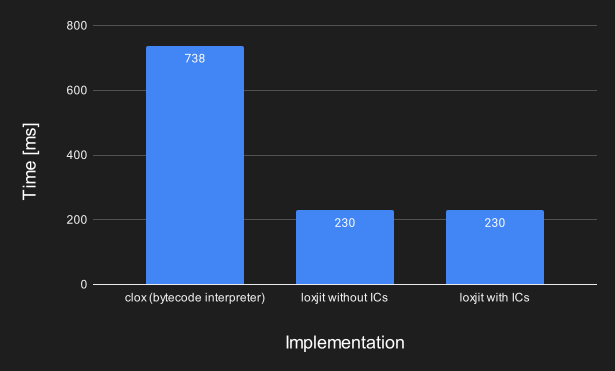

loxjit: A Simple JIT Compiler For Lox
RustLoxJITStarting Point: A Bytecode Virtual Machine
A bytecode VM works by first compiling a program to bytecode and then executing that bytecode. The compiler breaks the program down into an array of opcodes that each represent a basic operation. These opcodes are only a single byte in size, which is why this representation is also called "bytecode". Some opcodes also carry additional information, like the opcode to load a constant, which is always followed by an additional byte that stores the index of that constant.
Bytecode is then executed by the virtual machine (VM), which walks through the individual instructions and performs the associated
operation. The core of the VM is essentially one big match statement (Rust's version of a switch statement) in a loop.
From Compiling Bytecode to Compiling Machine Code
A bytecode VM is conceptually very similar to an actual CPU. A CPU also executes a list of instructions one after the other (well, actually, for optimization purposes CPUs don't execute instructions strictly in order, but we won't get into that). CPUs obviously don't understand the bytecode we defined for our little language, the're made for an architecture specific machine code. Real compilers have different backends to support multiple architectures (such as x64, ARM or RISC-V), but we will focus on only one of them, x64 (because that's what my computer is running on right now). We can expect the CPU to execute machine code faster than the VM can execute bytecode. This is because the CPU is now directly executing compiled lox code, instead of executing an interpreter that in turn executes lox code. CPUs are also really well optimized, and we can now directly benefit from those optimizations.
"Crafting Interpreters" already provides us with a bytecode virtual machine (clox) that we can use as a starting point to compile to machine code.
There is already a compiler that emits bytecode. We'll just have to modify it to emit machine code instead! I didn't want to write my own assembler,
so I used dynasm-rs to translate assembly to actual machine code. With that out of the way, we'll have to modify the compiler just so that it emits
assembly code. To do that, I chose the easy path and more or less translated what the interpreter was doing to assembly code. Compiler Explorer is a great
tool to help with that. And just like that, loxjit was born.
Differences
The Stack
Some things however are different with assembly than with bytecode: While the VM knows of its current call frame and has its own stack of values, our implementation
has to use the native stack. The native stack is also used for other things, like storing the return address of functions (this is mandated by the x64 architecture itself -
the call instruction pushes the current instruction pointer to the stack and the ret instruction restores it). We also use the stack to store
the pointer to the function we're in, and the pointer to the base of the current call frame, when calling a function. When the function returns, they will again be restored.
Something to keep in mind is that the native stack grows downwards instead of upwards, which means that pushing something to the stack (using the push instruction) will decrement
the pointer to the last value on the stack (this pointer is called the "stack pointer" and is stored in its own register).
VM Calls
I did not implement everything in assembly. Some things, like the garbage collector or the code to print a value to the console, are still written in the host language (Rust).
Rust functions can be called from the assembly if we assign them a specific calling convention (Rust does not have a stable ABI, so we have to use something foreign). I chose to use
the win64 calling convention, because that one seems to be supported on most platforms. Depending on the calling convention certain registers are volatile or non-volatile
(volatile registers can be overwritten by a called function)
and different registers are used to pass arguments and return values. Something I didn't initially know was that the stack also had to be aligned by 16 bytes before calling.
Constants
clox has a constant table where all the constants are stored. loxjit compiles all constants into the machine code. This means the number of constants is now essentially unlimited.
Garbage Collection
Garbage collection isn't actually that different. Instead of walking the custom stack the GC has to go through the native stack, which is exactly the same. Due to lox's value representation it will interpret all the extra pointers lying around on the stack (return addresses, etc.) as floating point values and ignore them for garbage collection.
Optimizations
Compiling to native code already is a performance improvement, but there's some more things I did:
Accessing Globals Without Hash Lookups
clox uses HashMap lookups to read/write global variables. loxjit instead assigns each global variable an index and looks it up in an array.
The only remaining runtime cost is to check whether the variable has been defined before. If it hasn't been defined, using it is a runtime error
that we need to report.
String Keys
Since all strings are interned by the VM we can avoid using the whole string as a key for property lookups.
Instead, we can use the pointer to the string's buffer as a key and speed up hash lookups.
I should note that
this optimization is only applicable because I'm not using the HashMap from the book but the one from the Rust
standard library. I'm pretty sure the book's implementation wouldn't have to rely on such an optimization as it
caches the hash in the string object itself.
Shapes and Inline Caches
How It Works
So far we have only talked about compiling some code and then running it. But what if we change the code while running it, to make it faster? This is where Inline Caches (ICs) come into play. They use the fact that while it is theoretically possible to pass totally random objects around in a dynamic programming language, this rarely happens. Instead, in most cases, a certain place in the code will always see the same kind of object repeatedly. This allows us to change code from always going "We need property 'foo' of this object -> look it up in the HashMap -> found!" to going "Is it the same kind of object as before -> if so, the property we're looking for must be at the same index as before -> found!".
You might have noticed the main difference: Instead of performing a hash lookup we only perform a lookup by index. Another thing that might have caught your eye is the part where the new code checks for the "kind of object" it is. This is called the "shape" of an object (an alternative name would be "hidden class"). The shape of an object describes how it is laid out, i.e. at what index a property with a certain name can be found. The object itself only contains an array of properties that we can index into.
To make this work we need to make sure that objects that look the same also have the same shape assigned to them. This is achieved using a
tree of shapes that makes sure that objects that have the same properties added to them in the same order end up with the same shape. Other implementations
might use more sophisticated techniques, but this seemed good enough for me.
Example With get_property
Enough said, let's look at how an Inline Cache actually looks!
This is my the inline cache for get_property (more or less):
; rax = receiver.shape
mov rax, QWORD [rcx + 0x10]
; r8 = cached shape pointer
mov r8, QWORD 0
cmp r8, rax
; No match, jump to the slow path
jne >ic_end
; rax = receiver.fields
mov rax, QWORD [rcx + 0x18]
; rax = fields[0]
mov rax, QWORD [rax + 0]
; store the result on the stack
mov QWORD [rsp + $stack_offset], rax
; Jump over the slow path
jmp >ok
ic_end:The inline cache is part of the compiled output from the very beginning, but only after a property_get has succeeded on the slow path it will be enabled.
As you can see, initially the cached shape pointer is set to 0. This makes sure that the Inline Cache is ignored before it is enabled, because 0 can
never be a valid pointer to a shape.
To enable it, we set the shape pointer and the property index (I've highlighted the relevant lines). Now, if the same property access is
run again with a receiver of the same shape, it will hit the inline cache and be much faster than the first time.
Performance Evaluation
Let's look at two benchmarks to determine the improvement we got:
Slow Fibonacci
Running this code:
{
fun fib(n) {
if (n < 2) return n;
return fib(n - 2) + fib(n - 1);
}
var start = clock();
print fib(35) == 9227465;
print clock() - start;
}Produces these results:

The performance improvement we see here is the result of compiling to machine code, which is most noticeable in code like this that does a lot simple numeric operations and function calls. Unsurprisingly, enabling inline caches has no effect here because ICs are only used for property access and method calls, which this code has exactly zero.
Property Accesses and Method Calls
You can find the whole benchmark here, but it essentially looks like this:
class Foo {
init() {
this.field0 = 1;
// ...
this.field29 = 1;
}
method0() { return this.field0; }
// ...
method29() { return this.field29; }
}
var foo = Foo();
var start = clock();
var i = 0;
while (i < 500000) {
foo.method0();
// ...
foo.method29();
i = i + 1;
}
print clock() - start;The results are:
Performance is dominated by HashMap lookups here, and it doesn't matter if the HashMap lookup is initiated by an interpreter or natively compiled code - it
will always be rather slow. I guess most of the performance improvement for loxjit (without ICs) vs clox comes from the different HashMap used
(loxjit uses hashbrown from the standard library). Where we do see a nice improvement is when ICs are enabled, as this benchmark
can be optimized really well using inline caches: Since the same property access is performed over and over again, apart from the first run no further HashMap lookups
have to be performed.
Conclusion
Crafting Interpreters is a great book if you want to learn more about how programming languages can be created. It is also a great starting point if you want to do some exploration on your own, as I've tried to show in this blog post.
If you notice something wrong in this post or if you have other comments please feel free to open an issue or reach out via email (can be found here).
The source code for loxjit can be found here.